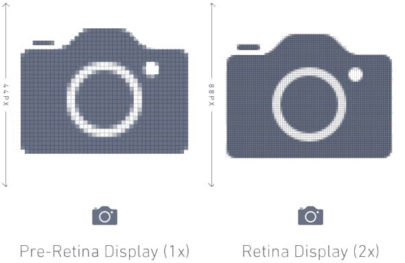
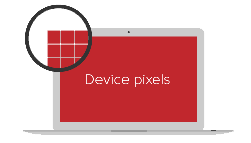
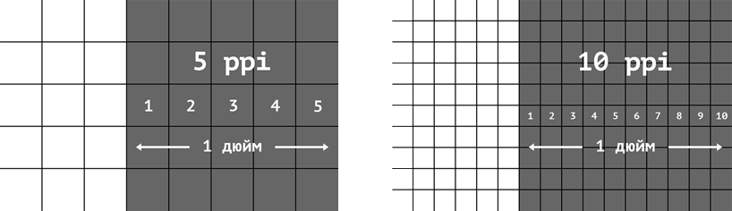
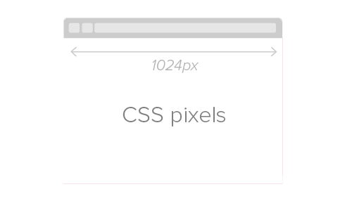
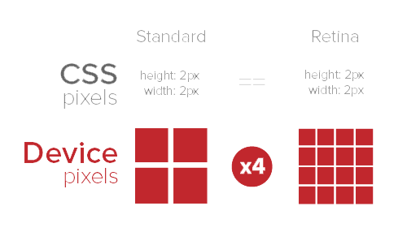
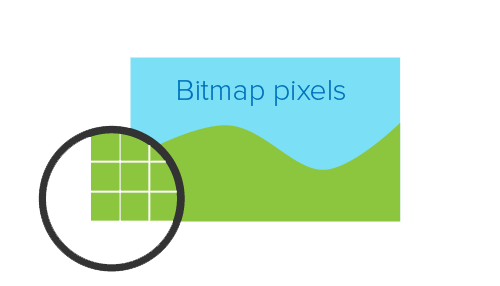
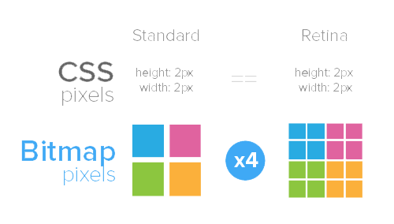
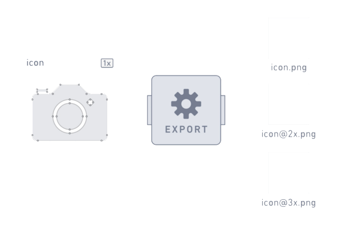

Retina display
Retina display - маркетинговый термин компании apple, описывающий устройства с экранами повышенной пиксельной плотности. В тот же размер экрана вмещается больше физических пикселей повышенной плотности. За счет этого что их размер меньше. Это повышает качество и четкость изображений, делая цвет более насыщенным и живым
Физические пиксели
Физические пиксели (device pixel или hardware pixel) - самый маленький элемент любого экрана (его матрица), каждый из которых имеет свой цвет и яркость
Разрешение экрана (screen resolution) - это кол-во физических пикселей на экране утройства. Например разрешение 1920х1080 означает что экран 1920px по ширине и 1080px по высоте. Если умножить получается общее кол-во пикселей на таком экране 2073600
Плотность экрана (pixel density) - это кол-во физических пикселей, которые помещаются в 1 дюйм, измеряется в PPI(pixel per inch). Чем выше плотность, тем меньше размер пикселя и тем больше их на экране
Css пиксели
Css пиксели (devise independent pixels) - абстрактная величина, не зависящая от экрана устройства и используемая браузером для расчета размеров для контента на странице

На обычных экранах 1 css пиксель соответствует одному физическому
пикселю устройства. При масштабировании и на экранах высокой
пиксельной плотности, в одном csss пикселе может помещаться больше
одного физического пикселя
Например есть блок размером 2х2 пикселя. Все размеры элемента, которые
указываются в css или HTML это css пиксели.
div {
width: 2px;
height: 2px;
}
На обычных экранах он будет занимать область 2х2 физических пикселей, а на retina экранах, например с плотностью 2, этот же блок получит 4х4 физических пикселя. Т.е в 2 раза больше по горизонтали и вертикали. Таким образом на retina экранах плотность пикселей в 2 раза выше стандартной, количество пикселей в 4 раза больше чем на обычной.
Растровые пиксели
Растровые пиксели (bitmap pixels) - самые маленькие части, состовляющие растровые изображения (png, gif, jpeg и т.д). Каждый пиксель содержит информацию о своем цвете и расположении в системе координат изобрадений
В коде размеры изобрадения задаются в css пикселях. При отображении на обычном экране 1 растровый пиксель соответствует 1 css пикселю. На retina экране с плотностью 2 каждый растровый пиксель умножается в 4 раза что приводит к потере качества изображения не подготовленного к retina.
Именно поэтому растровые изображения для ретина экранов должны иметь большое кол-во пикселей. Это гарантирует их четкость при отображении их в браузере
Ретинизация графики
Для retina экранов небходимы специально подготовленные ресурсы. Текст
и векторная графика (svg) отображается одинаково хорошо на любом
экране, т.к их рендерит сам браузер по набору точек и соединяющих их
кривых. Ретинизация это прием для подготовки растровой графики
Для того чтобы подготовить растровую графику к ретине необходимо
экспортировать из макета большие изображения. Например чтобы показать
фографии 200х300 css px на экране с плотностью 2 необходимо
подготовить ее вариант 400х600 растровых пикселей. Для экрана с
плотностью 3 это изображение должно быть 600х900 растровых пикселя.
Для растровой веб графики достаточно подготовить только 1х и 2х версии. Большинство людей с хорошим зрением не заметят разницу между 2х и 3х изображениями, из-за физических ограничений человеческого глаза, но вес последнего будет значительно больше, что негативно скажется на его загрузке.
Процесс подготовки состоит из экспорта изображения в N раз больше размера оригинала и сохранение их в соответствующем префиксом @2x и @3x. Для оригинала префикс не нужен.
После чего достаточно задать нужный размер тегу <img /> в HTML или css коде
В примере используется онлайн сервис изображений. Загружается 3 картинки 320х240(1х) 640х480(2х) 960х720(3х) пикселей. Размер всех элементов <img /> одинаковый 320х240 css пикселей. Если перейти в пример с телефона или просто увеличить масштаб страницы с примером будет заметно что первое изображение сильно размывается, второе остается вполне качественным, а третье остается четким.
Это не значит что всегда нужно экпортировать и загружать самое большое изображение. На этом этапе мы научились делать ретинизацию растровой графики. Дальше мы научимся загружать изображения под разную ширину и плотность экранов.
Отзывчивое изображение
Представьте изображение 1200х600 пикселей. Оно отлично выглядит на
широком экране. А что будет если мы откроем страницу на телефоне или
планшете? Ничего хорошего. Изображение будет становится шириной 1200px
и появится горизонтальная прокрутка, а на retina оно будет выглядеть
размыто
Отзывчивое изображение - этот термин для описание набора
приемов, используемых в HTML и css, при помощи которых контентные и
фоновые изображения выглядят одинаково хорошо на устройствах с
различными размерами и плотностью экрана
Самый простой способ реализовать отзывчивость это использовать одно
изображение для всех устройств, задав ему определенный набор css
свойств.
/* Свойства нужно применить ко всем изображениям,
поэтому используется селектор тега. */
img {
display: block;
max-width: 100%;
height: auto;
}
- Изображение необходимо сделать блочным чтобы убрать нижний зазор строчного элемента
- Максимальная ширина в 100% гарантирует то, что изображение будет уменьшаться, если необходимо, но не растягиваться
- Автоматическая высота устанавливается для того чтобы изображение сохраняло оригинальные пропорции при изменении ширины

Так работает техника простого отзывчивого контент изображения. Одна картинка для всех устройств, которая подстраивается под текущую ширину своего родительского элемента
Создадим контейнер для картинки div.thumb, зададим ему минимальную и максимальную ширину. Картинке дадим отзывчивые свойства. Теперь картинка всегда будет заполнять thumb изменяя свой размер в зависимости от ширины родителя.

Этот базовый подход для контент изображений слишком простой и не решает проблему ретина экранов и вес изображения на моб устройствах.
Отзывчивое фоновое изображение
Для ретинизации фонового изображения необходимо задать размер фонового изображения равным размеру самого элемента
.box {
width: 200px;
height: 300px;
background-image: url('photo@2x.png');
background-size: 200px 300px;
}
В случае когда у элемента нет фиксированой ширины и высоты размер фона можно задать значением cover чтобы фон полностью заполнял элемент
.box {
background-image: url('photo@2x.png');
background-size: cover;
}
При таком подходе браузер загрузит 2х изображение на любом экране - не идеально. Поэтому существуют медиа функции, позволяющие определить плотность пикселей экрана в css. Внутри набора таких медиа функций переопределяем путь к фоновому изображению.
/* Базовые стили и 1x изображение */
.box {
width: 480px;
height: 320px;
background-image: url('photo.png');
background-size: 480px 320px;
}
/* Переопределяем путь к 2x изображению
если плотность экрана как минимум 2 */
@media (min-device-pixel-ratio: 2),
(min-resolution: 192dpi),
(min-resolution: 2dppx) {
.box {
background-image: url('photo@2x.png');
}
}
В медиа функциях min-device-pixel-ratio указывается численное значение пиксельной плотности экрана - коэффициент между фихическими и css пикселями. Так же необходимо указать функцию min-resolution с двумя разными значениями
- DPI (dots per inch) - количество физических пикселей на дюйм экрана. На экранах стандартной плотности пикселей в одном дюйме 96 точек
- DPPX (dots per pixel) - количество физических пикселе в одном css пикселе, другими словами это плотность пикселей. 1dppx=1dpi
- Медиа функция min-device-pixel-ratio поддерживается некоторыми браузерами только с вендорными префиксами, поэтому если обработать этот код автопрефиксером получим финальный вариант
.box {
width: 480px;
height: 320px;
background-image: url('photo.png');
background-size: 480px 320px;
}
@media (min-device-pixel-ratio: 2),
(-webkit-min-device-pixel-ratio: 2),
(min-resolution: 192dpi),
(min-resolution: 2dppx) {
.box {
background-image: url('photo@2x.png');
}
}
Такая солянка из медиа функций и их значений нужна потому, что они еще не стандартизированы между разными браузерами.
В примере задано одинаковое фоновое изображение с различными размерами для экранов со стандартной 1х и удвоенной 2х плотностью пикселей
Если открыть инструменты разработчика и перейти на вкладу network то будет видно что загружается только одно изображение, подходящее под плотность экрана, на котором открыта веб страница. При входе с macbook pro 2017 плотность пикселей экрана, которая равна 2 браузер загрузит изображение в два раза больше стандартного

Отзывчивый элемент <img>
Отзывчивый элемент <img> используется браузером для загрузки только подходящего под устройство изображения из предложенных разработчиком. Разработчик указывает список доступных к загрузке изображений, а браузер основываясь на размеры экрана устройства и его пиксельной плотности, выбирает самое подходящее

Например разработчик указал два доступных изображения 300х300 и 600х600 пикселей. Если браузеру достаточно картинки 300х300, это четырехкратная экономия веса указаного изображения. Чем меньше размер экрана устройства тем больше выгода от такого подхода. Экономия траффика на моб устройстве может достигать 70-90% по сравнению с desctop
Атрибут srcset
Определяет список версий одного и того же изображения в разных размерах. Не стоит пытаться загрузить разные изображения (по контенту или формату) при помощи этой техники, браузер обращает внимание только на размер и считает что все передают srcset - это версии одного и того же изображения
<img srcset="" src="" alt="" />
Дескриптор Х
Самый простой способ использования отзывчивого элемента <img> это применения дескриптора X, который буквально указывает браузеру для какой плотности экрана подходит эта версия изображения
<img
srcset="photo.jpg 1x, photo@2x.jpg 2x"
src="photo.jpg"
alt="Описание изображения для всех версий"
/>
В атрибуте src указывается версия изображения в стандартном качестве,
которая будет использована в случае если браузер старый и не знает о
srcset. В атрибуте srcset указываем 1х и 2х версии изображения,
разделяя объявления запятой. Если страница будет открыта на
устройствах с плотностью пикселей 2 или выше вместо стандортного будет
использоваться изображение photo@2x.jpg
В примере для атрибута srcset указаны изображения стандартной и
двойной плотности, а так же оригинальное изображение по умолчанию в
атрибуте src
Если открыть инструмент разработчика и перейти во вкладку network то будет видно, что загружается только одно изображение, подходящее под полотность экрана, на котором открыта веб страница. При открытии с мак бук 2017 плотность пикселей экрана которая равна 2 браузер загрузит изображение у которого указан дискриптор 2х

Единственный недостаток такого подхода кроется в ограниченности
критирев по которым браузер выбирает изображение - только плотность
пикселей экрана. Отзывчивые изображения используются в отзывчивой
верстке, размеры блоков которой изменяются в зависимости от размера
viewport
Задать жесткие размеры изображения на экране не всегда возможно,
потому что при увеличении viewport необходимо будет показывать
изображение 300х200 в блоке размером 600х400 пикселей или больше
Идеально если бы браузер выбирал изображение не только по плотности
пикселей но еще и учитывал текущий размер viewport и размер текущей
картинки на экране. Для этого ему необходимо знать размер
оригинального изображения в предлагаемом списке. Как раз эту задачу
решает дескриптор W и атрибут sizes.